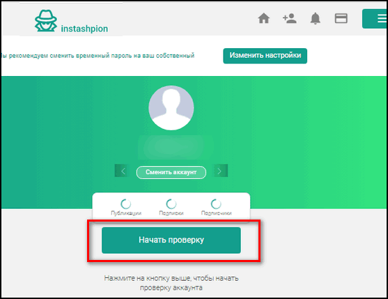
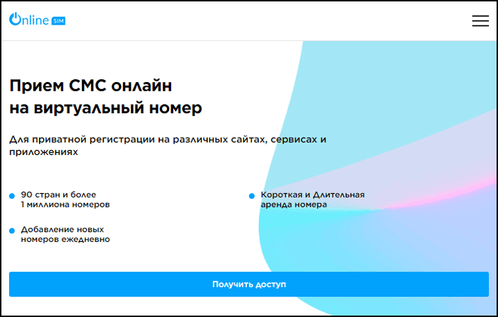
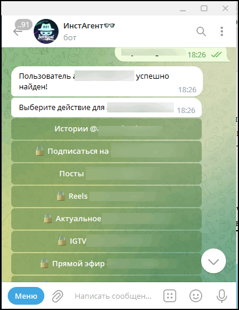
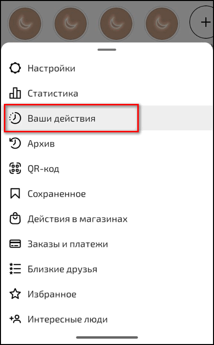
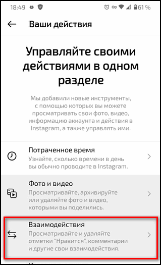

Как начать следить за человеком в Инстаграм

Следить за человеком в Инстаграме* можно через подписку, добавив в Избранное или с помощью фейка. Но остаются действия, которые отследить самостоятельно невозможно: гости страницы, активные комментаторы и Истории, где отображаются зрители.
Как анонимно следить за чужим профилем Instagram* в 2023
В 2023 году появился намек на то, что Instagram* планирует ввести функцию: «Активные действия» - Посетители профиля. На данный момент эта опция не работает и скорее, не будет введена из-за правил приватности. Поэтому пользователям остаются только обходные варианты, чтобы следить за интересующими аккаунтами.
Способы, как следить за чужим аккаунтом анонимно:
- сохранить страницу в закладки и посещать, не совершая каких-либо действий;
- подписаться со второго аккаунта;
- воспользоваться сервисом Инсташпион;
- сервисы для проверки страницы.
Если пользователь заходит в чужой профиль не ставит лайки, комментарии и не просматривает Сторис – отследить его посещение не получится стандартными методами. Показать, что в учетную запись заходили могут только платные сервисы и приложения. Полноценная слежка за аккаунтом, с просмотром Историй и статистикой по посетителям, возможно через Инсташпиона, Зенграм и другие сервисы. В их функции входит ежедневная проверка базы, возможность скачивания фото и видео из аккаунта.
Способ 1: Сервис Инсашпион: возможности
Сервис Инсташпион – это комплекс услуг, направленных на слежку за чужим аккаунтом или своим, если владельце интересно посмотреть гостей. Аналогов нету, указывает на аккаунты пользователей, которые совершили какое-либо действие в искомом профиле. Например, можно посмотреть кто чаще всего ставит лайки, перейти к этому человеку на страницу. К перечню функций относятся:
- гости. Кто посещал аккаунт единожды;
- просмотры Историй анонимно;
- подписки и подписчики;
- комментарии. Кому оставил отклик владелец страницы и кто отправил ему;
- лайки. Взаимные и невзаимные.
 Как следить за аккаунтом в Инстаграме* с помощью Инсташпиона:
Как следить за аккаунтом в Инстаграме* с помощью Инсташпиона:
- Зайти в сервис – нажать сверху: «Попробовать бесплатно».
- Вписать никнейм – подождать пока начнется проверка страницы.

- Выбрать: «Проверка базы данных».
Далее появится список опций, которые можно просматривать и переходить в аккаунты к пользователям. В разделе: «Истории» доступен просмотр текущих временных публикаций, скачивание на компьютер и мобильное устройство.
Некоторые разделы могут не содержать информацию, если в течение недели не было изменений: новых подписчиков, подписки или комментарии. В этом случае нужно обновить базу данных в течение следующих суток.
Способ 2: Следить самостоятельно в Инстаграме*
Следить за страницей Инстаграм* возможно и самостоятельно, если создать другую страницу. Для этого пользователю пригодится номер телефона, адрес электронной почты, придумать никнейм и пароль. Учитывая проблему с уведомлениями, которые не приходят на российские номера, стоит воспользоваться сервисами временных номеров. Как сделать аккаунт для слежки в Instagram*:
- Воспользоваться onlinesim – выбрать номер телефона из перечня бесплатных.
- Перейти к созданию нового профиля в Инстаграме* – указать выбранный номер.

- Подождать пока придет сообщение с кодом подтверждения – ввести комбинацию.
- Добавить никнейм, пароль – открыть новую учетную запись.
После того, как пользователь создаст новый аккаунт, он сможет следить за подписчиками в Инстаграме*, лайками и комментариями. Даже подписаться на закрытый профиль и просматривать публикации. Создавая дополнительную страницу нужно ответственно подойти к заполнению её публикациями, к описанию и даже добавлению Историй. Иначе искомый человек может догадаться, что за его страницей наблюдают.
Способ 3: Смотреть Сторис в Инстаграме* анонимно
Следить анонимно за Сторис в Инстаграме* пользователь может с помощью Телеграм-ботов. В них можно скачать изображение, посмотреть текущие размещенные изображения, а также перейти к Актуальному. Воспользоваться Телеграм-ботом, чтобы смотреть Сторис:
- Зайти в месенджер через компьютер или телефон.
- Вписать в поиске чатов: «instagent_bot» - указать в поле чата никнейм.

- Перейти к публикациям и Историям – выбрать изображение для скачивания.
Также, пользователь может просматривать публикации, без их дальнейшего сохранения. Бот предлагает анонимный просмотр и пробный период в течение суток.
Что же делать, если страница закрыта, а нужно срочно посмотреть Историю без создания второго аккаунта? Мы нашли ответ на этот вопрос ? Смотри Сторис даже на закрытой странице.
Случайно поставил лайк: как убрать
Следив за Инстаграмом* девушки можно случайно поставить лайк. Это происходит по двойному тапу по экрану и порой, пользователь даже не заметит совершенное действие. Как отменить действие:
- Зайти в Инстаграм* – нажать по трем полоскам сверху.

Ваши действия – Взаимодействия.- Публикации, которые понравились – перейти к посту и убрать лайк.

Но если на запись была отметка давно поставлена, то владелец страницы её точно увидит в уведомлениях. И убрать в этом случае получится, но будет заметно. Раздел со «Взаимодействиями» направлен на просмотр историй действий начиная с первого комментария, лайка или реакции. Некоторые из них пользователь сможет удалить. Например, отклики, отправленные более года назад. В списке не появятся только те публикации, которые были удалены или если их автор деактивировал страницу.